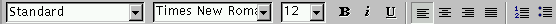
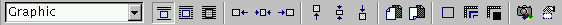

![[LinuxFocus Image]](../../common/May1998/border-short.jpg)
| Noticias Archivos Compañías Consejos |
La Suite StarOffice (Creación de Presentaciones)por Ismael Ripoll |
Introducción
Instalación
Características
globales
Creación de
presentaciones
"cosas" que
se pueden hacer
Exportar a HTML
Conclusiones
|
En este artículo se presentan, a grandes rasgos, las aplicaciones que ofrece el paquete ofimático StarOffice 4.0. Y se analiza en más detalle la aplicación de creación de presentaciones (algo muy parecido al PowerPoint de MS). En posteriores artículos se tratará el resto de las aplicaciones: procesador de textos, hoja de cálculo, navegador web, etc. IntroducciónAun a riesgo de caer en frases muy típicas, se puede describir al programa StarOffice 4.0 como:"Una solución integral a los problemas informáticos de cualquier departamento" Concretando: el paquete StarOffice contiene las siguientes aplicaciones (intentaré no dejarme ninguna): procesador de textos, hoja de cálculo, base de datos, editor de presentaciones, lector de correo, cliente ftp, lector de noticias, navegador web, editor HTML y editor gráfico. Antes de seguir es necesario aclarar la licencia de uso: no es software GPL, y los fuentes no están disponibles. Por ahora StarDivision ha estado produciendo versiones BETA que ofrecía libremente. Y seguirá así hasta que finalmente hagan una versión NON-COMMERCIAL FOR PERSONAL USE ONLY disponible a través de Caldera y StarDivision. StarDivision ha firmado un acuerdo con Caldera por el cual le cede la comercialización y distribución de StarOffice. Tras este acuerdo sólo Caldera y StarOffice pueden distribuir StarOffice. Si se quiere incluir StarOffice en otras districuciones se ha de contactar primero con Caldera. Es por este motivo por el que no se pueden encontrar distribuciones en los mirrors habituales. Desde mi punto de vista, StarOffice va a marcar un punto de inflexión en la historia de Linux. Hasta ahora Linux estaba en gran medida restringido a los entornos de investigación y desarrollo en las empresas y universidades (sin contar al gran número de incondicionales hackers) debido principalmente a dos factores: (1) se necesitaba tener más conocimientos de informática que con otros sistemas operativos; y (2) había una carencia de software de aplicación para la oficina, me refiero a editores de texto WYSIWYG, hojas de cálculo, etc.. Con las actuales distribuciones se empieza a solucionar el problema de la instalación y administración de Linux, y si bien es cierto que existen muy buenos editores de texto para Linux (Emacs, LyX, Applix, etc), ninguno de ellos está a la altura de programas como el Ms Word (por más que duela reconocerlo).... Pero con StarOffice la situación es bien distinta, su calidad, potencia y aspecto están al nivel del omnipresente Ms Office. Como alguien comentó: "Bill Gates tendrá pesadillas el día que conozca StarOffice". Una particularidad de StarOffice es que es un solo programa y todas las aplicaciones se ejecutan dentro de la ventana de este único programa. De hecho, la gente de StarDivision (la empresa que lo ha creado) ha creado un completo entorno de ventanas propio, que se ejecuta dentro de la única ventana que necesita StarOffice. De esta forma es más fácil mantener la aplicación, ya que StarDivision ha hecho versiones para múltiples plataformas: OS/2, Windows, Linux, Sun, y otros Unix. Sólo el 20% del código es dependiente de la implementación. Los diseñadores de StarOffice saben perfectamente que el look-and-feel de MS es el gran ganador en todos los ámbitos de la informática, y que la organización de los menús y las combinaciones de teclas que casi todo el mundo conoce son las que el Office ha establecido como estándar de facto. Por lo que no se han complicado la vida, y tanto la instalación, como la organización y la utilización del paquete es totalmente igual que el "estándar". De echo, llega incluso a ser molesto para los muy usuarios de Linux este fuerte parecido. Este artículo lo estoy escribiendo desde el mismo StarOffice. La siguiente figura es una foto del aspecto del editor de texto:
InstalaciónLa instalación es totalmente automática. Los pasos son los siguientes: bajarse de http://www.stardivision.com el fichero "so40_lnx_01.tgz"; descomprimirlo en un directorio temporal, con lo que aparecerá el directorio "Office_Install"; dentro de este directorio ejecutaremos el fichero "setup".Antes de empezar la instalación asegúrate que tienes una libc versión 5.4.22 o superior. En otras palabras, debe de existir el fichero /lib/libc.so.5.4.22. Puedes encontrarla en cualquier sunsite. Si tienes la versión 5.0 de Red Hat también tendrás problemas pues ellos utilizan ya la siguiente versión de librería, la libc6 y la libc.so.5.3. He oído que ya han sacado un patch para que sea compatible con los programas que utilizan la libc.so.5.4, pero de todas formas te voy a dar un truco infalible: (1) copias la librería libc.so.5.4.22 (superior) al directorio /lib, ésta la puedes conseguir en cualquier lugar, desde el directorio del gcc en cualquier sunsite, hasta de cualquier distribución slackware o Debian; (2) ejecutas ldconfig; (3) para ejecutar el setup has de hacer. $ (export LD_LIBRARY_PATH=$LD_LIBRARY_PATH:/lib; setup)Los paréntesis son necesarios. De esta forma forzamos a que el programa setup crea que está en un sistema con librerías antiguas. Tenemos dos posibilidades: instalar el paquete sólo para nuestro uso propio, o instalarlo en un directorio publico para que lo puedan utilizar todos los usuarios del sistema. Para instalarlo para que todos puedan utilizarlo, hay que ejecutar el programa setup con el parámetro /net, e instalarlo en un directorio al que todos tengan acceso como puede ser /opt. Esta instalación ocupa unos 114Mb. Luego, cada usuario que quiera utilizarlo ha de ejecutar el programa /opt/Office40/bin/setup y elegir la opción "Install from CD or net". La instalación de cada usuario ocupa unos 12Mb. Lo último que queda por hacer es añadir en la variable PATH el directorio en el que se encuentran los ejecutables: export PATH=$PATH:$HOME/Office40/bin. El StarOffice hace un uso extensivo de las capacidades del servidor X, por tanto es interesante tener todas las fuentes de letras instaladas, en caso contrario las fuentes que no encuentre las sustituirá por otras de distinto tamaño con un resultado penoso. En el propio paquete vienen un directorio de fuentes que pueden ser utilizadas por tu servidor X. Las siguientes ordenes informan al servidor X dónde puede encontrar las fuentes que el StarOffice le pida. $ xset fp+ $HOME/Office40/fonts/75dpi $ xset fp+ $HOME/Office40/fonts/type1El ejecutable que pone en marcha todo el paquete es soffice. Si tu ordenador tiene menos de 32Mb o si lo tienes con muchos programas en marcha ten un poco de paciencia, puede tardar bastante tiempo en arrancar. Al igual que en la instalación, si tienes problemas de librerías, tendrás que ejecutar: $ (export LD_LIBRARY_PATH=/lib.old:$LD_LIBRARY_PATH; soffice)
Características globalesAyuda en líneaTodos los programas que componen el paquete están preparados para ofrecer ayuda al estilo Windows (osea sobre todo lo que se te pueda ocurrir por tonta que sea la pregunta). En todas las ventanas de diálogo aparece un botón de Ayuda. La versión 4.0 aún no viene con los ficheros de ayuda, por lo que no pasa nada al pulsar cualquiera de estos botones.Otra ayuda que esta vez sí que está disponible son los tutoriales sobre cada uno de los programas. No son tutoriales exhaustivos, pues posiblemente no han tenido tiempo para hacerlos, pero las partes que ya están hechas, son realmente buenas. Son manuales que se pueden leer a la vez que trabajamos con nuestro documento. A parte de los clásicos globitos de ayuda, StarOffice dispone de unos globos de ayuda extendidos (se activan desde el menú de Help->Extended_Tips) que son realmente útiles. Menús contextualesSobre cualquier "objeto" que tengamos seleccionado, podemos desplegar un menú pulsando el botón derecho del ratón. Este menú contiene las opciones más usuales que se pueden realizar sobre el objeto concreto seleccionado. También las barras de menús se adaptan al tipo de objeto que hay seleccionado. Por ejemplo si hemos seleccionado un bloque de texto, entonces la barra de herramientas de objetos tiene el siguiente aspecto: Pero si lo que tenemos seleccionado es un objeto gráfico, entonces la barra de herramientas que aparece es:  Varias aplicaciones simultáneasPodemos tener varias aplicaciones abiertas a la vez. Cada documento puede ser totalmente distinto. Por ejemplo, podemos estar editando un texto en una ventana, a la vez que en otra ventana navegamos por la red y en otra tenemos una hoja de calculo procesando. Sin ir más lejos, ahora tengo la presentación de ejemplo que estoy preparando y este mismo documento abiertos.Tecnología OLE para LinuxQuizás no conozcas el concepto OLE de Windows. OLE es el acrónimo de Object Linking and Embedding, es un protocolo para enlazar componentes en un entorno gráfico. En otras palabras, podemos insertar documentos creados con otras aplicaciones en nuestra aplicación. Tal como he comentado StarOffice está compuesto de muchas aplicaciones y gracias a esta tecnología (implementada en su totalidad por los creadores de StarOffice, pues en Linux aún no existía) podremos pegar en una presentación una hoja de cálculo o una tabla del editor de textos.Corrector ortográfico y sinónimosDispone de un potentísimo corrector ortográfico. Puede funcionar en modo diferido, en cual, a través de una ventana nos presenta las palabras que no ha encontrado y nos ofrece una lista de posibles correcciones. También dispone de la corrección online; de esta forma, conforme se teclea texto, éste es analizado y subrallado en rojo si se detecta alguna falta. Las palabras incorrectas se pueden corregir rápidamente pues en el mismo menú contextual aparecen las palabras propuestas. En cualquiera de los dos casos, es increíblemente rápido.Un Pequeño problema es que por ahora sólo se dispone de el diccionario en ingles y alemán, aunque creo que ya ha salido, o está a punto de hacerlo, la versión multilingüe. También dispone de un excelente diccionario de sinónimos (lo cual es muy útil para los que tenemos que escribir en un idioma que no es el nuestro nativo).
Es imposible abordar todas las funcionalidades de StarOffice en un solo artículo, por lo que comenzaré esta serie con una de las aplicaciones que más he echado a faltar en Linux: el editor de presentaciones, el PowerPoint de Linux. Creación de presentacionesLos programas para la creación de presentaciones están a mitad de camino entre los editores de texto (Word, LyX, etc) y los editores de gráficos vectoriales (CorelDraw, xfig, etc). Con un editor de presentaciones podremos crear presentaciones de varios tipos: presentaciones en pantalla, presentaciones para transparencias (tanto en color como en blanco y negro) y presentaciones en papel.Una presentación está compuesta por una serie de páginas independientes; esto es, si el texto y las figuras no caben en una página entonces en lugar de saltar a la siguiente página, se pierde fuera de la página. Se tiene un control total sobre la disposición y localización de todos los objetos. Y normalmente se dispone de un amplio conjunto de objetos prediseñados (figuras geométricas, iconos, globos de texto, etc.) Dentro de la "suite" StarOffice el editor de presentaciones se llama Presentation, si bien es poco significativo pues sólo se puede acceder a él desde la ventana de soffice. Hay dos formas de crear una presentación: partiendo de una presentación en blanco, o utilizando el asistente --Auto Pilot--. En el segundo caso se puede hacer desde el menú de File->New->Presentation (evidente), sólo tenemos que ir siguiendo las ventanas del asistente y al finalizar tendremos un esquema de transparencias, todo ello idéntico a como lo hace el PowerPoint.
"cosas" que se pueden hacerLo más importante de un programa de presentaciones no el la cantidad de cosas novedosas y divertidas que pueda hacer, sino lo fácil y automatizado que tenga las operaciones que más se utilicen.El 99% de todas las transparencias que hagamos tendrán un aspecto muy parecido: tendrán un título, y luego seguramente un texto en forma de lista de ítemes. Por tanto si esto se puede hacer con una pulsación, mejor que si se hace con dos. Presentation nos permite elegir desde una ventana un conjunto de posibles disposiciones estándar. La estructura de una transparencia se puede modificar en cualquier momento.
Figuras con textoUna presentación no puede limitarse a una secuencia de transparencias con texto, en una buena presentación es aconsejable distribuir el texto de acuerdo con las relaciones existentes entre los conceptos que se están presentado. Poner el texto dentro de un rectángulo u otras figuras geométricas es un recurso imprescindible en un programa de presentaciones. Presentation dispone de los típicos rectángulos, rectángulos con bordes redondeados, elipses, etc. No dispone de figuras 2D más complejas, como las que hay en PowerPoint, pero que rara vez se utilizan. Si queremos figuras más complejas tendremos que crearlas a mano alzada con la herramienta líneas y polígonos.Podemos cambiar fácilmente todos los atributos de cada una de las figuras tanto desde las barras de herramientas como desde el menu contextual. Para escribir texto dentro de cada figura sólo hay que hacer click dos veces sobre la figura. Figuras 3DDispone de un conjunto de figuras básicas en 3D, a las que se les puede modificar multitud de parámetros, con unos resultados muy aparentes.
LíneasImprescindibles para establecer relaciones entre objetos y para centrar la atención del espectador. Tenemos una amplia gama de tipos de líneas, desde las líneas sin extremos, pasando por las líneas con terminación en punta de flecha y las líneas de diseño de CAD para medir distancias.Los conectores son otro tipo de líneas para unir objetos. Los conectores se utilizan para enlazar objetos de forma que si desplazamos uno de los dos objetos, el conector se adapta para seguir enlazando los dos objetos. Existe varios tipos de terminaciones en cada uno de los dos extremos: cuadrado, círculo, flecha; rellenos y vacíos.
GráficosEvidentemente podemos insertar cualquier tipo de gráfico de mapa de bits: <../../common/May1998/tt.jpg, bmp, gif, png, tif, etc. A a partir de este momento el gráfico se trata como cualquier otro objeto lo podemos mover, redimensionar, etc.Dispone de una amplia galería de imágenes prediseñadas. AnimacionesEntramos ahora en las características más espectaculares. Si nuestra presentación la vamos a realizar utilizando un proyector de vídeo, entonces podemos utilizar el propio programa Presentation para hacerlo. En este caso el programa toma el control total del servidor X y va pasando las transparencias a golpe de ratón (o automáticamente mediante un temporizador). Lo único que tenemos que hacer es conectar la salida del vídeo del ordenador a la entrada de vídeo del proyector, apretar el botón de "Slide Show" y apagar las luces.De esta forma, podemos hacer que los objetos se muevan e interactúen entre ellos de forma predefinida (Tools->Effects). Durante la creación de la presentación podemos indicarle a cada objeto cómo debe aparecer y desaparecer También podremos elegir la forma en la que se realiza la transición de una transparencia a la siguiente (Tools->Slide_Transition). La cantidad tipos de transiciones disponible es enorme. Es seguro que podemos evitar que nadie se duerma durante nuestra presentación. En el modo Layout View podemos ver muy rápidamente el efecto de transición de cada transparencia. Pero el movimiento no es lo único que podemos hacer, también podemos incluir sonido. Todavía otra posibilidad es crear gif animados e incluirlos en la presentación.

Objetos OLEPodemos insertar cualquier otro documento creado desde StarOffice en muestra presentación. Igualmente, podemos pegar las transparencias que hagamos sobre cualquier otro documento.Exportar a HTMLMuchas veces sucede que una presentación que hemos creado para una conferencia o un seminario, queremos dejarla accesible desde Internet en forma de página HTML. StarOffice nos permite hacerlo de forma completamente automática. Al exportar la presentación a HTML, StarOffice genera una primera página índice con el título de todas las transparencias, y dos ficheros por cada transparencia. Uno de los ficheros es una pequeña página html que contiene únicamente una imagen en formato <../../common/May1998/tt.jpg de la transparencia y unos enlaces a la página siguiente, anterior e índice, y el otro es un fichero <../../common/May1998/tt.jpg de la transparenciaLa páginas HTML creadas de está forma no tienen ningún tipo de animación. Haz click en la siguiente imagen para ver el resultado de una presentación convertida en HTML:
ConclusionesEs impresionante la cantidad de trabajo que hay detrás de este programa. Si tenemos en cuenta el tamaño de la empresa que ha creado StarOffice, el número de programadores con los que ha contado, y el tiempo que ha empleado para hacerlo; podemos afirmar sin duda alguna que Microsoft no tiene ni idea de como hacer software. Y que si StarDivision sigue al mismo ritmo, en un plazo de menos de un año, StarOffice será con diferencia el entorno de trabajo más utilizado en el mundo Linux, y con muy buenas expectativas en el mundo Windows. |
{kind=link}
{kind=link}
{kind=link}
{kind=link}
{kind=link}
{kind=link}
Artículo original en Castellano
Páginas web mantenidas por Miguel A Sepulveda.